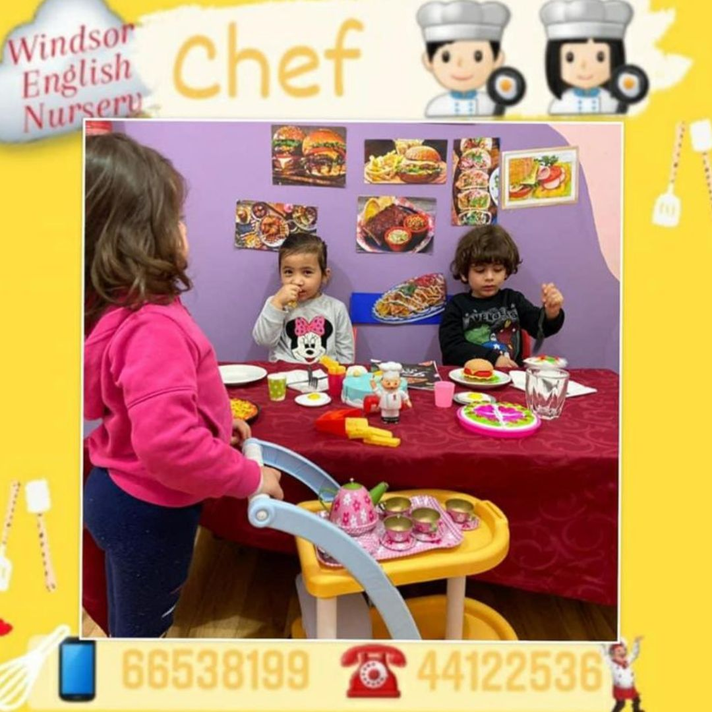

Windsor English Nursery
Windsor English NurseryMission
Provide a world class early years environment where children feel safe, secure and valued.
A warm, friendly and welcoming nursery environment for children from 2 months to 4 years old.
Dear parents, welcome to Windsor English Nursery. We create a safe environment where children enjoy, learn and grow. We focus on fine and gross motor skills under the seven learning areas of EYFS.
We believe children learn best through play and activity. Every child is unique and we help discover each child’s talent.

Provide a world class early years environment where children feel safe, secure and valued.
Build a lifelong love of learning and prepare children to confidently meet future challenges.
First aid trained staff, secure entrance, cameras, regular drills, and dedicated nurse support.